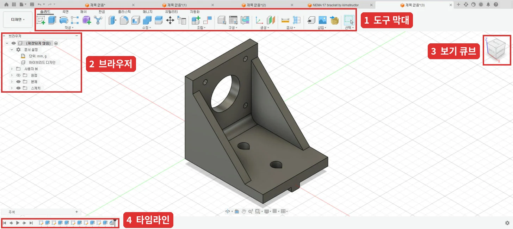
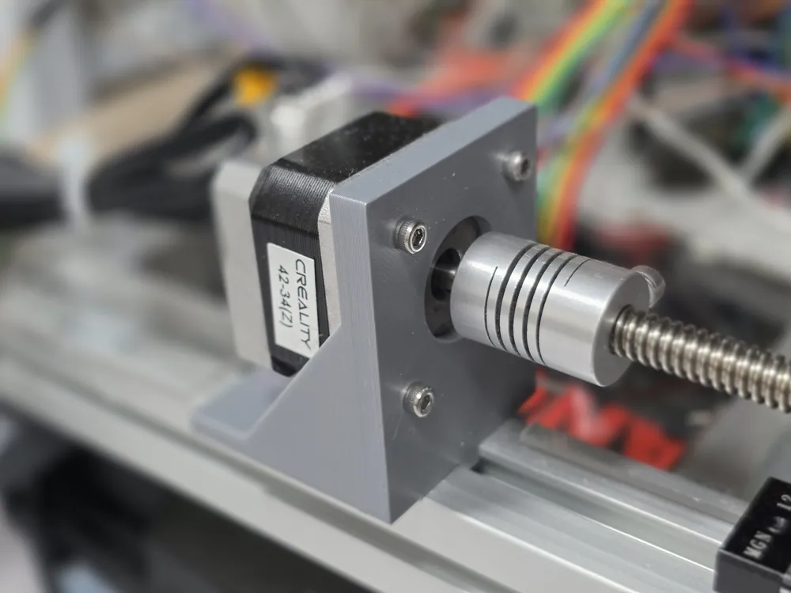
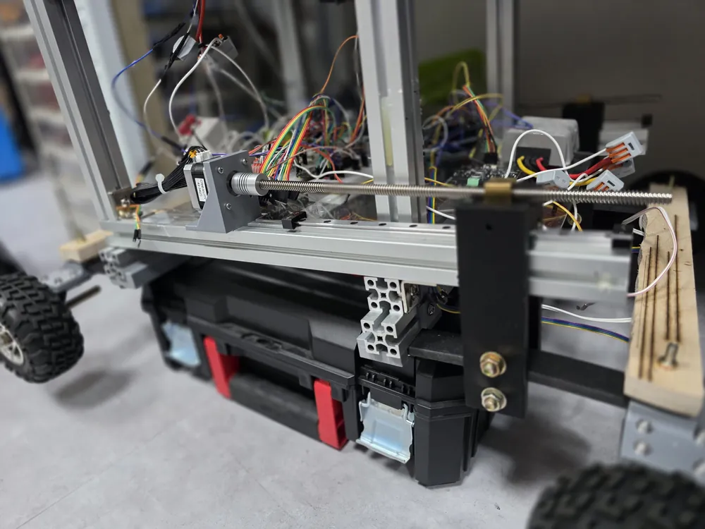
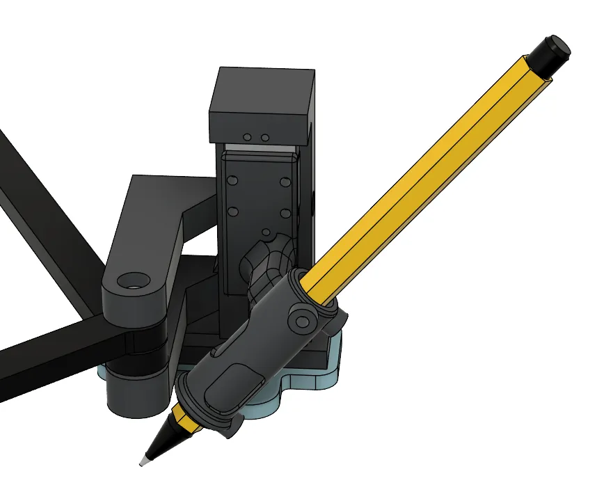

3D 실습 · Fusion
Fusion 기초와 AI 모델링
Fusion을 설치하고 기본 조작을 익힌 뒤, AI에게 Fusion 모델링을 맡기는 방법과 실제로 맡겨 본 결과를 정리했습니다.
1설치
학생은 교육용 라이선스로 Fusion을 1년 동안 무료로 쓸 수 있고, 재학 중이면 매년 갱신됩니다. 학생 확인에 며칠이 걸릴 수 있으니 실습 전에 미리 신청해 두세요.
- 노트북Windows 또는 Mac. AI 연결은 데스크톱 앱에서만 됩니다
- 마우스휠 마우스. 화면 이동과 회전을 가운데 버튼으로 해서, 터치패드로는 따라 하기 어렵습니다
- Autodesk 교육용 Fusion 페이지에서 Fusion을 고르고 교육 플랜에 가입합니다. 처음이면 이때 Autodesk 계정이 만들어집니다.
- 학생 자격을 확인합니다. 학교 이메일로 바로 안 되면 재학증명서를 올립니다. Autodesk 안내로는 서류 확인에 며칠 걸릴 수 있습니다.
- 확인이 끝나면 Fusion을 내려받아 설치하고, 같은 계정으로 로그인합니다.
- 오른쪽 위 계정 아이콘 → 환경설정(Preferences) → 기본 단위(Default Units)에서 설계 단위가 mm인지 확인합니다.
개인용으로도 됩니다
Fusion 개인용(무료, 비상업용)은 학생 확인 없이 바로 받을 수 있고, 이번 실습 내용은 모두 됩니다. 다만 수정할 수 있는 디자인이 10개까지이고 AI 연결은 교육용에서만 확인했기 때문에, 교육용을 조금 더 권합니다.
2기본 조작
화면 구성

- 1 도구 막대스케치, 돌출, 필렛 같은 명령
- 2 브라우저원점, 바디, 스케치 목록. 눈 아이콘으로 숨기기
- 3 보기 큐브면을 누르면 그 방향에서 보고, 집 아이콘을 누르면 처음 시점으로
- 4 타임라인만든 순서대로 쌓이고, 더블클릭하면 그 단계를 다시 고칠 수 있습니다
마우스
| 동작 | 방법 |
|---|---|
| 화면 이동 | 가운데 버튼을 누른 채 끌기 |
| 회전 | Shift + 가운데 버튼을 누른 채 끌기 |
| 확대·축소 | 휠 굴리기 |
새 디자인 종류
새 디자인을 만들 때 종류를 고릅니다. 자주 쓰는 종류는 환경설정(Preferences) → 일반에서 기본값으로 정해 둘 수 있습니다.
| 종류 | 언제 고르나 |
|---|---|
| 부품 디자인 | 부품 하나를 만들 때. 실습 브라켓처럼 출력할 부품 하나는 이걸 고릅니다. |
| 조립품 디자인 | 따로 만든 부품 파일을 불러와 서로 맞출 때. 모델링 도구는 기본으로 꺼져 있습니다. |
| 하이브리드 디자인 | 한 파일 안에서 여러 부품을 같이 만들고 맞출 때. 예전부터 쓰던 Fusion 방식입니다. |
부품 디자인은 나중에 조립품이나 하이브리드로 바꿀 수 있습니다. 반대로는 안에 하위 부품이 없을 때만 바뀝니다.
모델링 흐름
- 스케치 만들기 → 그릴 평면이나 면을 고릅니다.
- 선, 사각형, 원을 그리고 D로 치수를 줍니다.
- 구속으로 위치를 고정합니다. 일치(점 붙이기), 중간점, 동일(같은 크기), 수평·수직, 대칭을 가장 많이 씁니다. 선이 파란색이면 아직 덜 정해진 것이고, 다 정해지면 검은색이 됩니다.
- 스케치 마침을 누르고, E로 돌출하거나 잘라냅니다. 영역을 고를 때 원하는 부분만 골랐는지 꼭 확인합니다.
- Ctrl + S로 저장합니다. 파일은 Autodesk 클라우드에 저장됩니다.
출력용 파일 내보내기
왼쪽 브라우저에서 바디를 오른쪽 클릭 → 메쉬로 저장(Save As Mesh) → 3MF 또는 STL을 고릅니다.
3브라켓 따라 만들기
아래 AI 비교에 나오는 NEMA17 모터 브라켓을 직접 만들어 봅니다. 대칭 돌출 같은 기능은 쓰지 않고 제일 기본 기능만 씁니다. 일단 끝까지 만들어 보는 게 먼저고, 다른 기능은 나중에 익히면 됩니다.
- 부품 디자인으로 새 디자인을 만들고, XZ 평면에 스케치를 만듭니다.
- 선으로 L자를 그립니다. 가로 58mm, 세로 50mm, 두께 5mm입니다.
- 스케치를 마치고 L자를 48.5mm 돌출합니다.
- 세운 판의 안쪽 면에 스케치를 만들고, 바닥에서 33.75mm 높이의 판 가운데에 지름 22.3mm 원을 그립니다.
- 같은 중심에 31mm 중심 직사각형을 그리고, 네 모서리에 지름 3.2mm 원(볼트 구멍)을 그립니다.
- 스케치를 마치고 원 5개를 잘라내기로 뚫습니다.
- 4번 스케치를 다시 편집해서 판 가장자리에 폭 3mm 테두리를 그리고 2mm 돌출합니다.
- 옆면(L자가 보이는 면)에 L자 안쪽을 채우는 삼각형을 그리고 3mm 돌출합니다. 반대쪽 옆면도 똑같이 합니다.
- 프로파일에 닿는 바닥면에 스케치를 만들고, 중심 지름 원으로 가운데를 찾아 폭 6.5mm 직사각형을 길게 그립니다.
- T너트 자리로 길이 11mm 중심 직사각형 2개를 그리고, 그 안에 지름 6.3mm 원(볼트 구멍)을 그립니다.
- 원은 잘라내기로 뚫고, 11mm 자리를 뺀 폭 6.5mm 부분은 3.5mm 돌출합니다.
치수는 아래 "AI에게 요청하는 법"의 채운 예시와 같습니다.
4파일 받기와 고치기
다른 사람이 만든 모델은 아래 사이트에서 받을 수 있습니다. 모델 페이지의 다운로드 버튼으로 받아 슬라이서에서 열면 됩니다.
- MakerWorld뱀부랩이 운영. Bambu Studio에서 바로 열 수 있습니다
- Printables프루사가 운영
- Thingiverse오래된 모델 공유 사이트
파일 형식
| 형식 | 안에 든 것 | Fusion에서 고치기 |
|---|---|---|
| STL, OBJ | 삼각형 면(메쉬)만 | 어려움 |
| 3MF | 메쉬. 색이나 출력 설정이 같이 들어 있기도 함 | 어려움 |
| STEP | 솔리드 | 면을 밀고 당기거나 구멍을 더하는 정도는 쉬움 |
| F3D | Fusion 원본(스케치, 타임라인 포함) | 치수까지 그대로 고칠 수 있음 |
STL을 고쳐야 할 때
STL은 삼각형 면의 덩어리라서, 구멍 지름이나 길이를 숫자로 바꿀 수 없습니다. 고칠 일이 있으면 먼저 STEP이나 F3D 파일도 같이 올라와 있는지 확인하고, 없으면 아래 방법을 씁니다.
- 크기 조절, 자르기, 글자나 구멍 더하기: Fusion까지 갈 필요 없이 슬라이서에서 됩니다.
- Fusion에서 솔리드로 바꾸기: 삽입 → 메쉬 삽입으로 불러온 뒤 메쉬 탭 → 수정 → 메쉬 변환(Convert Mesh)을 씁니다. 각진 부품은 Prismatic 방법으로 바꾸면 평면과 원통 면이 하나로 합쳐져서 고칠 만해집니다. 곡면이 많은 모양은 삼각형이 그대로 면으로 남아서 무겁고 고치기 어렵습니다. Prismatic은 개인용 라이선스에서는 안 됩니다.
- 다시 그리기: 치수를 재서 직접 다시 그리는 게 빠를 때가 많습니다. 메쉬를 불러와 옆에 두고 보면서 그리면 됩니다.
STL을 STEP으로 바꿔 주는 다른 프로그램이나 사이트도 원리는 같아서, 삼각형을 면으로 바꿀 뿐 원래 치수를 되살리지는 못합니다.
5AI 연결
Fusion 안에 들어 있는 MCP 서버를 켜고 AI 데스크톱 앱을 연결하면, 말로 지시한 내용을 AI가 Fusion에서 직접 모델링합니다. chatgpt.com, claude.ai 같은 웹 채팅에서는 바로 연결되지 않습니다.
| AI | 쓰는 앱 | 무료 계정 |
|---|---|---|
| ChatGPT | ChatGPT 데스크톱 앱(Codex) | 됨. 월 사용 한도 있음 |
| Claude | Claude 데스크톱 앱 | 확인 못 함. Pro 이상은 됨 |
| Gemini | Antigravity 앱 | 문서상 됨(AI Plus로 확인). Gemini 3.8 Flash만 |
| Autodesk Assistant | Fusion에 들어 있음 | 교육용 라이선스에서 확인. 연결 필요 없음 |
Fusion 준비
- Fusion을 실행하고 오른쪽 위 계정 아이콘 → 환경설정(Preferences) → 일반 → API로 갑니다.
- Fusion MCP Server를 체크하고 포트가
27182인지 확인한 뒤 Apply를 누릅니다. - 텍스트 명령 창에
MCP - http://127.0.0.1:27182/mcp가 보이면 켜진 것입니다. - 새 디자인을 열어 둡니다. 홈 화면에서는 AI가 작업할 수 없고, 작업 중인 디자인이 열려 있으면 AI가 그걸 고쳐 버릴 수 있습니다.
체크박스가 없으면 Fusion을 최신 버전으로 업데이트합니다.
ChatGPT
- ChatGPT 데스크톱 앱을 설치하고 로그인합니다. "Windows 설정을 마치세요" 안내가 뜨면 계속을 누르고 기다립니다.
- 왼쪽 아래 프로필 → 설정 → 검색창에
MCP→ 플러그인 → MCP 탭으로 갑니다. - 추가 → MCP 서버 추가를 누르고 이름
fusion, 유형 스트리밍 가능한 HTTP, URLhttp://127.0.0.1:27182/mcp를 넣습니다. 나머지 칸은 비워 둡니다. - 저장한 뒤 홈 화면 입력창에
/mcp를 입력해fusion 사용함이 보이면 연결된 것입니다. "인증 미지원"은 정상입니다.
Claude
- Claude 데스크톱 앱을 설치하고 로그인합니다.
- 설정 → 커넥터 → 추가 → 커넥터 둘러보기에서
Fusion을 검색합니다. - Autodesk Fusion을 설치합니다. 이름이 비슷한 Fusion Data MCP는 다른 기능입니다.
- Claude를 다시 시작합니다. 커넥터의 도구 목록에 도구가 보이면 연결된 것입니다.
Gemini (Antigravity)
Gemini 데스크톱 앱에는 MCP 서버를 추가하는 메뉴가 없어서, Google이 만든 Antigravity 앱을 씁니다.
- Antigravity 앱을 설치하고 Google 계정으로 로그인합니다.
- 메모장의 파일 → 열기에서 주소창에
%USERPROFILE%\.gemini\config를 입력하고, 파일 형식을 모든 파일로 바꾼 뒤mcp_config.json을 엽니다. - 아래 내용을 넣고 저장합니다. 다른 서버가 이미 있으면
fusion항목만 추가합니다. - Antigravity 메뉴의 Window → Close로 앱을 완전히 닫고 다시 엽니다. 창의 X 버튼으로는 설정을 다시 읽지 않습니다.
- Customizations → Installed → MCP Servers에 fusion ● 4 tools enabled가 보이면 연결된 것입니다.
{
"mcpServers": {
"fusion": {
"serverUrl": "http://127.0.0.1:27182/mcp"
}
}
}주소 항목 이름은 반드시 serverUrl이어야 합니다. url이나 httpUrl은 인식되지 않습니다.
Autodesk Assistant
Fusion 오른쪽 위 Assistant 아이콘을 누르면 오른쪽에 대화창이 열립니다. 따로 연결할 필요가 없습니다.
첫 테스트
아래 문장을 보내 Fusion에 큐브가 생기면 연결이 끝난 것입니다. "Fusion MCP 도구로"를 넣어야 ChatGPT가 화면을 직접 조작하려 하지 않고 MCP를 씁니다.
Fusion MCP 도구로 10mm 큐브를 만들어 줘| 증상 | 해결 |
|---|---|
| ChatGPT가 "Computer Use" 허용을 묻는다 | 거부한 뒤 "Fusion MCP 도구로"를 넣어 다시 요청 |
| 도구 실행 승인 창이 뜬다 | 정상. 실행할 내용을 보고 한 번만 허용 |
| 연결되지 않는다 | Fusion이 켜져 있는지, MCP 체크와 포트를 다시 확인 |
| 명령이 실행되지 않는다 | 홈 화면이 아니라 디자인을 열기 |
| 반응 없이 멈춘다 | Fusion에 열려 있는 대화상자(예: 복구된 문서)를 닫기 |
6AI에게 요청하는 법
AI에게 치수만 던져 주면 숫자는 맞아도 쓸 수 없는 모양이 나옵니다. 아래 틀로 무엇에 쓰는지까지 알려 주고, 만들기 전에 질문하게 하면 결과가 훨씬 좋아집니다.
요청 틀
위의 세 칸은 직접 채우고, [진행 방식]은 그대로 붙여 넣습니다. 모르는 값은 비워 두지 말고 AI에게 물어보면서 정하면 됩니다.
[무엇에 쓰는지]
(어디에 붙이고, 무엇을 하는 부품인지)
[맞춰야 하는 숫자]
- 붙는 부품의 구멍 간격·지름
- 꼭 지켜야 하는 거리
- 고정할 볼트 규격과 구멍 지름
- 끼우는 부분의 크기
[참고 자료]
(있으면 사진이나 스케치 첨부. "모양과 배치만 참고하고, 고정 방식과 재료는 내가 적은 대로 해 줘.")
[진행 방식]
Fusion MCP 도구로 새 디자인에 만들어 줘. (프린터 이름)으로 PLA 출력할 거야.
1. 만들기 전에 내 말을 어떻게 이해했는지 쉬운 말로 다시 설명해 줘. 모르는 값은 추측하지 말고, 정해야 할 게 있으면 선택지로 질문해 줘.
2. 큰 모양만 먼저 만들고 멈춰. 내가 괜찮다고 하면 나머지를 만들어 줘.
3. 다 만들면 내가 준 숫자대로 됐는지 Fusion에서 재서 표로 보여 줘.
4. 용도를 생각했을 때 약한 곳, 출력할 때 바닥에 놓을 면과 서포트가 필요한 곳을 알려 줘.채운 예시
아래 AI 비교에 쓴 요청입니다.
[무엇에 쓰는지]
3030 알루미늄 프로파일에 NEMA17 스테퍼 모터를 고정하는 브라켓이 필요해.
이 모터로 프로파일과 나란한 리드스크류를 돌릴 거야.
[맞춰야 하는 숫자]
- NEMA17 모터: 나사 구멍 31mm 간격 정사각형, 지름 3.2mm 4개 / 가운데 구멍 지름 22.3mm / 모터 몸체 42.3mm 정사각형
- 프로파일에 닿는 면에서 모터 축 중심까지 33.75mm
- 프로파일에 M6 볼트 2개와 T너트로 고정, 구멍 지름 6.3mm
- 프로파일 홈에 끼우는 돌출부: 폭 6.5mm, 높이 3.5mm, T너트 자리는 길이 11mm씩 비우기
[진행 방식]
Fusion MCP 도구로 새 디자인에 만들어 줘. 프루사 MK4로 PLA 출력할 거야.
1. ~ 4. (위 틀과 같음)고칠 때
(고칠 부분)을 (어떻게) 바꿔 줘. (바뀌면 안 되는 것)은 그대로 둬.보이는 증상이 아니라 원인을 말해야 합니다. Autodesk Assistant가 모터를 보강판 반대쪽에 달아서 모터 아래가 떠 있었을 때, "받침이 모터에 안 닿으니 닿게 해 줘"라고 하자 블록만 하나 더 붙였습니다. 원인을 말하면 이렇게 됩니다.
모터가 보강판 반대쪽에 달려 있어. 모터 몸체가 보강판 사이, 바닥판 위에 오도록 바꿔 줘. 구멍 크기와 간격, 축 높이는 그대로 둬.7AI 비교
ChatGPT, Gemini, Autodesk Assistant에게 위의 채운 예시로 같은 NEMA17 모터 브라켓을 맡겼고(ChatGPT는 참고 사진도 넣음), 직접 설계한 것과 Claude 것까지 함께 출력했습니다. Claude 것은 운영진이 여러 번 고쳐 달라고 해서 나온 최종본입니다. 모든 AI가 구멍 간격과 축 높이 같은 숫자는 맞췄습니다. 차이는 숫자 밖의 판단, 즉 볼트 머리가 들어갈 자리, 모터 방향, 서포트에서 났습니다.
| 만든 것 | 출력 | 서포트 | 문제 |
|---|---|---|---|
| 직접 설계 | 18g 1시간 2분 | 필요 | 없음 |
| Claude | 19.95g 1시간 6분 | 없음 | 없음 |
| Gemini | 23.72g 1시간 15분 | 필요 | 렌치볼트 머리가 모터와 1.4mm 겹침 |
| ChatGPT | 22.8g 1시간 12분 | 필요 | 렌치볼트 머리가 모터에 걸림, 보강 블록이 모터 자리를 0.15mm 침범 |
| Assistant | 출력 안 함 | — | 모터를 보강판 반대쪽에 달아 길이가 106mm |
| AI | 걸린 시간 | 사용량 |
|---|---|---|
| ChatGPTFree · Codex · GPT-5.6 Terra | 약 9분. 그전에 3번 넘게 실패 | 모든 시도 후 월 한도 40% 남음 |
| GeminiAI Plus · Antigravity · Gemini 3.8 Flash | 약 19분. 질문 답변 대기 포함 | 주간 한도 96% → 62% |
| AssistantFusion 내장 | 첫 시도에서 Fusion이 8분 넘게 멈춤, 이어서 약 4분 | 확인 못 함 |
| ClaudeMax · Fusion 스크립트 | 운영진이 여러 번 고쳐 달라고 한 최종본이라 비교 제외 | — |
직접 설계 기준


판 두께 5mm. 모터 몸체가 경사 옆면 사이에 들어가고, 축 높이 33.75mm 안에 M6 볼트 머리가 들어갈 틈을 남겼습니다. 판 위쪽의 2mm 테두리는 시뮬레이션해 보니 판을 0.6mm 두껍게 한 것과 같은 효과를 재료 1/3로 냅니다.


실제로 장착한 모습입니다.
Claude 서포트 없음


돌출부 끝을 45도로 깎고 M6 구멍을 물방울 모양으로 만들어, 서포트 없이 출력됩니다. 볼트 머리와 모터 사이에 1.6mm 여유가 있습니다.
Gemini 볼트 머리 간섭


판을 8mm로 두껍게 만들어서 렌치볼트 머리가 모터와 1.4mm 겹칩니다. Gemini가 스스로 버튼헤드 볼트를 쓰라고 안내했습니다. 처음에는 삼각 보강판이 모터 자리를 막아서 한 번 고쳤습니다.
ChatGPT 수정 어려움


Gemini처럼 판이 8mm라 렌치볼트 머리가 모터에 걸리는데, ChatGPT는 이를 알려 주지 않았습니다. 전체가 피처 하나로 만들어져서 Fusion에서 치수를 고칠 수 없습니다.
Autodesk Assistant 모터 방향 반대


숫자는 다 맞았지만 모터를 보강판 반대쪽에 달아서, 바닥판이 양쪽으로 뻗어 길이가 106mm가 됐습니다. 대신 만들기 전에 질문을 7개 했고, 끝나고 치수표와 출력 방향을 알려 준 점은 가장 좋았습니다.
슬라이서 화면
초록색이 서포트입니다. Claude 것만 서포트가 없습니다.


왼쪽 위부터 직접 설계, Claude, Gemini, ChatGPT
정리
- 숫자를 맞추는 건 AI가 잘합니다. 볼트 머리 자리, 모터 방향처럼 쓰임새에서 나오는 판단은 직접 확인해야 합니다.
- AI가 "확인했다"고 해도 Fusion에서 I(측정)로 직접 재 봅니다.
- 고칠 때는 증상이 아니라 원인을 말합니다.
8프로젝트 예시
손떨림이 있는 사람이 직접 글씨를 쓰도록 돕는 탁상형 장치를 AI와 함께 설계한 과정입니다. 무엇을 AI에게 맡기고 무엇을 직접 정했는지를 중심으로 정리했습니다.

바닥에 고정한 모터 2개와 팔 4개가 고리처럼 이어진 5절 링크 구조로, 모터가 펜 끝에 힘을 줍니다. 글씨는 사용자가 직접 쓰고, 장치는 떨리는 움직임만 줄이는 것이 목표입니다.
모델링 전에 대화로 정하기
아이디어부터 구조, 부품, 주요 치수까지 모델링을 맡기기 전에 Claude와 대화로 정했습니다.
- 후보에서 고르기: 남는 모터 2개로 뭘 만들지 묻고, 사회문제 해결 같은 조건을 하나씩 붙여 좁혔습니다. 구조도 Claude가 여러 방식을 비교해 내면 그중에서 골랐습니다.
- 양보하지 않을 조건 지키기: 펜 대신 따로 단 손잡이를 쥐는 안이 나왔을 때, 펜을 직접 쥐어야 손글씨 보조라고 보고 뺐습니다.
- 되묻기: 이해가 안 되거나 이상한 설명은 납득될 때까지 되물었습니다. 펜홀더가 두 팔이 만나는 점(합류점)을 중심으로 돌아서 모터가 힘을 못 쓰는 방향이 생긴다는 문제도 이렇게 되묻다가 찾았고, Claude 설명이 틀린 곳은 여러 번 바로잡았습니다.
- 치수까지 정하기: 부품마다 두께를 쌓아서 볼트 길이가 맞는지까지 계산해 두었습니다.
- 정리해서 넘기기: 대화가 686턴까지 길어지자 정한 것, 안 정한 것, 버린 것을 문서 하나로 정리해 모델링용 새 대화에 넘겼습니다. 새 대화의 Claude는 맥락을 다시 설명하지 않아도 첫 답부터 남은 결정을 계산해 제안했습니다.
모델링 — AI가 그리고, 저는 보고 판단


완성된 Fusion 모델입니다. 오른쪽은 펜홀더 부분입니다.
모델링은 Fusion에 연결한 Claude가 스크립트로 했습니다. 미스미 부품의 CAD 파일도 Claude가 찾아 내려받아 모델에 넣었고, 저장할 때마다 무엇을 바꿨는지 메모를 남겨서 메인 파일 하나에만 76개 버전이 쌓였습니다.
제가 한 일은 캡처를 보고 판단하는 것이었습니다.
- 펜홀더는 10월 13일 하루에 8안까지 나왔습니다. 다음 날 구조를 크게 바꾼 안을 만들 때는, 직접 보고 판단할 수 있게 원래대로 되돌릴 수 있도록 해 달라고 해서 기존 안을 남겨 두고 비교했습니다.
- 새 안을 보고는 세 가지를 짚었습니다. 볼트로 조립하던 맨 위 블록은 통으로 뽑아도 된다는 것, 계속 들어가는 스토퍼가 필요한 이유가 있냐는 것, 받침 안에 글씨가 보이는 공간이 너무 좁으니 넓게 펴자는 것입니다. 다음 안에 세 가지가 모두 반영됐습니다.
- 펜을 쥐는 부분(그립)은 이틀 동안 6안까지 나왔습니다. 2안을 보고는 합류점 쪽 출력물과 너무 가까워서 잡으면 손가락이 닿겠다며 여러 관점에서 분석하게 했고, 펜 교정기처럼 인체공학적으로 만들었는지 자료를 찾아 확인하게도 했습니다.


그립 1안(왼쪽)과 6안(오른쪽)입니다. 6안은 중지가 들어갈 자리를 만들려고 팔을 S자로 휘었습니다.
시험 출력과 실측으로 치수 정하기
베어링이 끼워지는 구멍처럼 출력 오차에 민감한 치수는 계산만 믿지 않고 시험 출력으로 정했고, 부품도 직접 재서 반영했습니다.
- 공차 시험판: 베어링 자리 7.2~7.8mm, 숄더볼트 구멍 4.3~4.9mm를 한 판에 뽑아 직접 끼워 봤습니다. PET-CF, 0.8mm 노즐입니다.
- 반영: 고른 값 7.30mm와 4.45mm를 모델 전체에 한 번에 반영했습니다. 설계할 때 넣은 7.05mm, 4.2mm와 꽤 달랐습니다.
- 그 밖의 시험: 엔코더 자석 홀더는 압입 4종과 접착 4종을 뽑아 봤고, 케이스는 바닥만 먼저 뽑아서 모듈이 맞는지 확인했습니다.
- 실측: 모터 바깥지름은 자료값 59.5mm가 아니라 실측한 63mm로 고쳤습니다. 볼트는 모델에 들어간 규격이 생각과 달라서 볼트가 들어가는 곳을 전부 표로 정리하게 했고, 가지고 있는 볼트를 캘리퍼스로 직접 재서 어떤 볼트와 인서트를 쓰고 몇 mm 물리는지 맞췄습니다.
정리 — AI와 나눈 일
| 단계 | AI가 한 일 | 제가 한 일 |
|---|---|---|
| 아이디어 | 후보 내기 | 조건 주고 고르기 |
| 구조 | 방식 비교, 부품 찾기, 계산 | 조건 지키기, 되묻기, 결정 |
| 넘기기 | 대화를 문서로 정리 | 새 대화로 넘기기 |
| 모델링 | Fusion에서 그리기, 캡처 | 보고 판단, 고칠 곳 짚기 |
| 시험과 조립 | 시험판 만들기, 값 반영 | 끼워 보고 값 고르기, 실측, 조립 |
위 AI 비교의 브라켓에서 AI들은 숫자는 맞췄지만 볼트 머리 자리나 모터 방향 같은 판단을 틀렸습니다. 요청문 하나로 그런 판단까지 AI에게 맡긴 경우입니다. 이 장치는 그런 판단을 모델링 전에 대화로 정해 두었고, 모델링 중에도 캡처를 보며 계속 짚었습니다.
프로젝트에 적용하려면
- 모델링을 시작하기 전에 구조와 부품, 치수를 AI와 대화로 정합니다. 모르는 건 이해될 때까지 되묻습니다.
- 대화가 길어지면 정한 것, 안 정한 것, 버린 것을 문서로 정리해 새 대화에 넘깁니다.
- AI가 그린 건 캡처로 보고 판단하고, 끼움 치수는 시험 출력으로, 구조는 조립해 보고 정합니다.
9직접 설계해야 할 때
AI에게 맡기더라도 직접 설계할 줄은 알아야 합니다. AI가 만든 모델이 맞는지 판단하고 틀린 곳을 원인으로 짚어 고치게 하려면, 그 부품을 직접 그릴 수 있을 만큼 알아야 하기 때문입니다.
AI에게 맡기기 좋은 것
- 붙는 부품에 맞춰 모양이 정해지는 부품: 모터, 베어링, 레일, 보드의 규격에 맞춰 구멍 위치와 치수를 잡는 일은 위 AI 비교에서도 모든 AI가 해냈습니다.
- 여러 안 만들어 보기: 프로젝트 예시에서는 펜홀더를 하루에 8안까지 만들어 비교했습니다.
직접 해야 하는 것
- 쓰임새에서 나오는 판단: 모터를 어느 쪽에 달지, 볼트 머리가 들어갈 자리, 출력 방향과 서포트. AI 비교에서 틀린 곳이 전부 여기였습니다.
- 간단한 부품: 브라켓 하나를 AI에게 맡기는 데 AI마다 9분에서 19분 정도 걸렸습니다. 이 정도 부품은 직접 그리는 게 빠를 수 있습니다.
- 계속 고칠 부품: AI가 만든 모델은 피처 하나로 뭉쳐 있거나 스크립트로 만들어져서, 타임라인에서 치수만 바꿔 고치기 어려운 경우가 있습니다. 직접 손볼 부품은 스케치부터 직접 만드는 게 낫습니다.